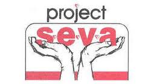
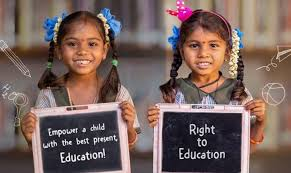
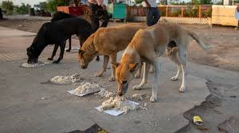
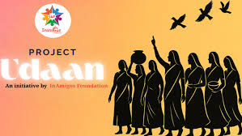
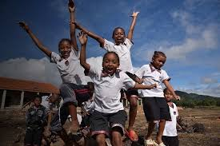

Projects Creating Real Change

Project SEVA
Providing food, clothing and essential support to underprivileged communities.

Project BACHPANSHALA
Supporting children's education through digital literacy and learning programs.

Project JEEV
Animal welfare initiative focused on feeding, rescue and protection.

Project UDAAN
Empowering women through skill development, awareness and financial independence.

Project PRAKRITI
Promoting environmental sustainability through plantation drives and awareness.

Project VIKAS
Enhancing employability through internships and professional skill development.